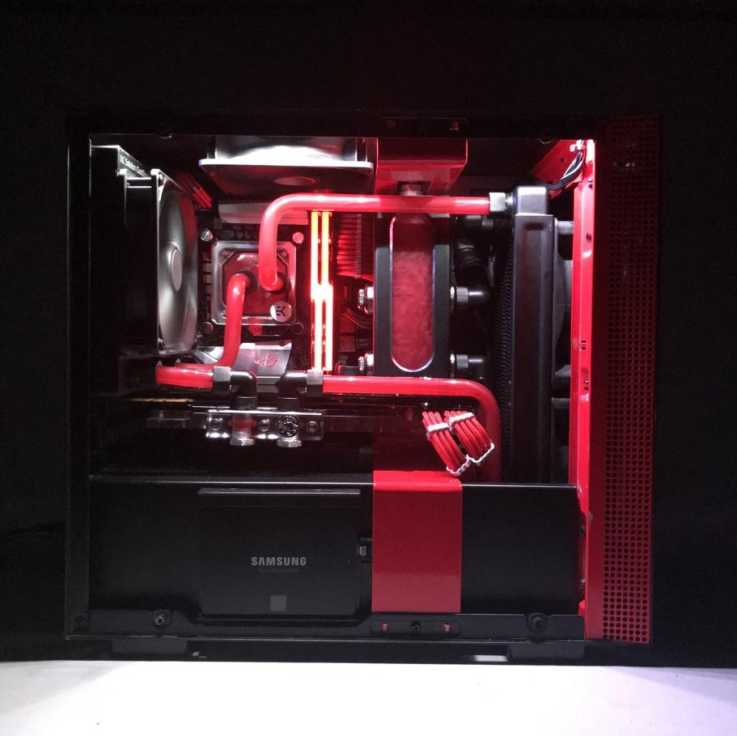
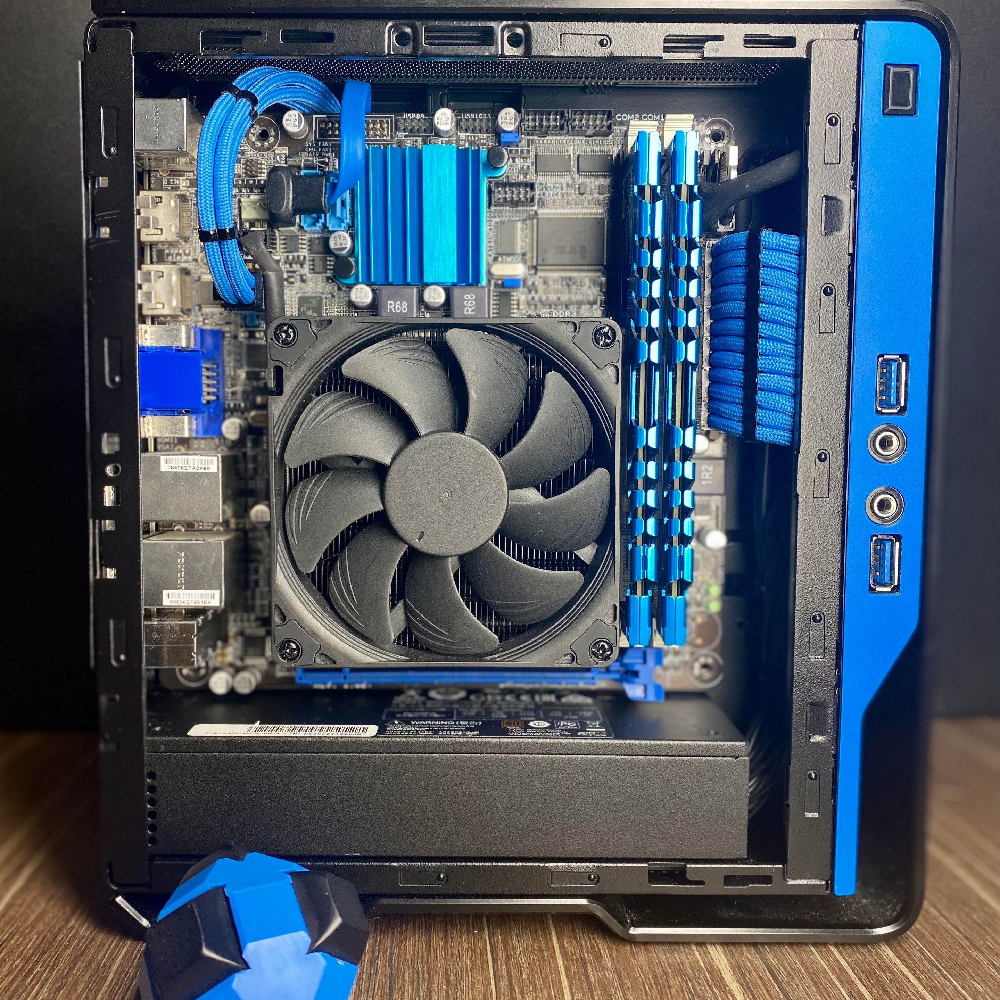
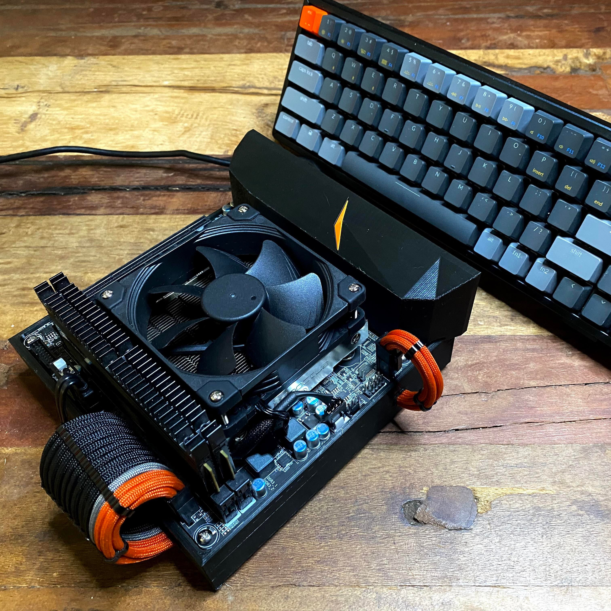
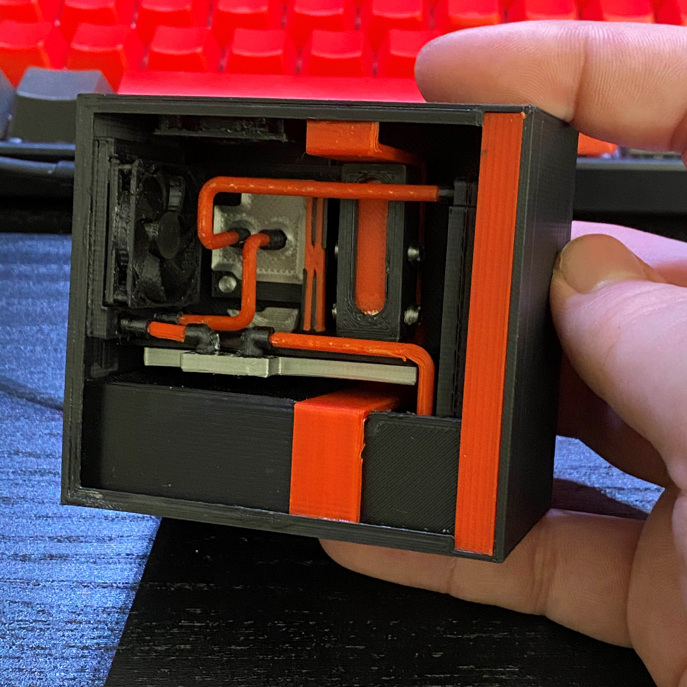
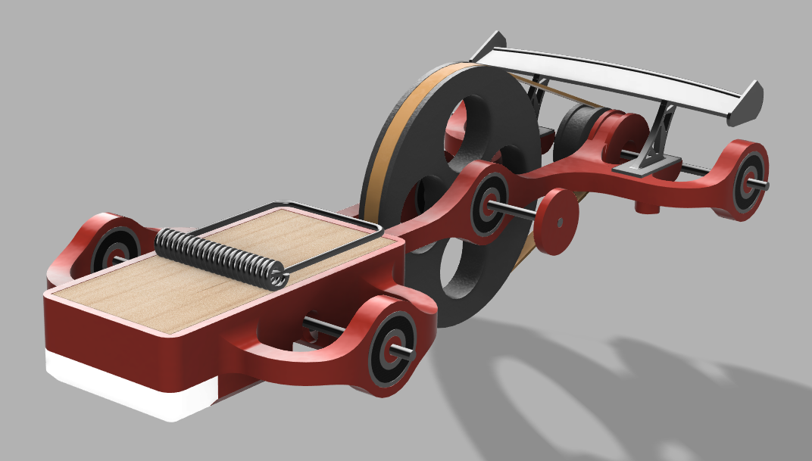

Welcome to my page! I'll showcase some of my projects here, you can get to them using the Navbar.
I'm a network security major at the University of Advancing Technology, previously having held positions in the financial sector for cyber security as an intern and consultant as well as having worked in the field as an IT consultant and computer technician, I've always had a passion for anything computer related.
As a hobby I'm really interested in building computers and 3D printing, sometimes both at the same time by designing and building 3D printed computer cases or designing miniature versions of my builds to be printed and used as Raspberry Pi cases, some of the mentioned projects and more can be seen below! I also like to play games such as Kerbal Space Program, sinking countless hours into stranding Jeb on various planets, I also enjoy online games like League of Legends. In addition I'm a big fan of music, I enjoy most genres and enjoy going to concerts when possible, my favorite band however is the one I quoted below!
"Doubt is failure by design" -Dance Gavin Dance, Variation
    